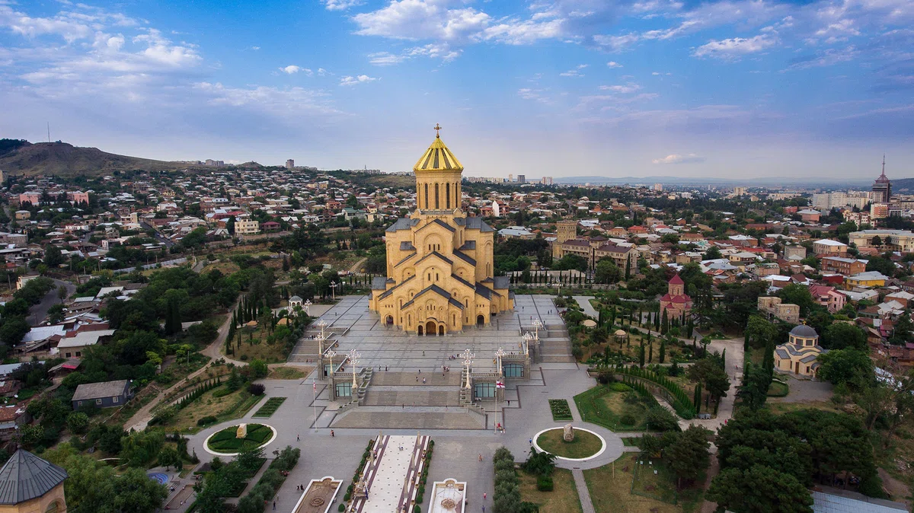
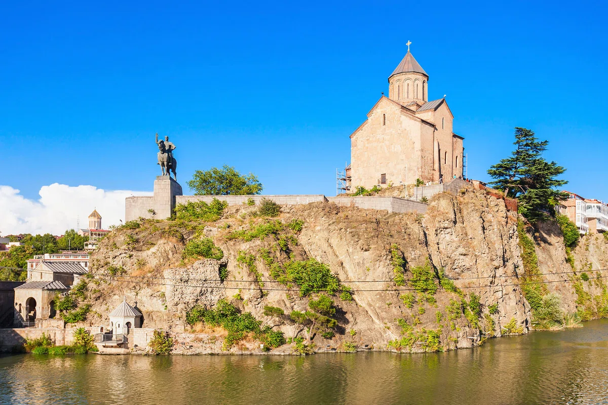
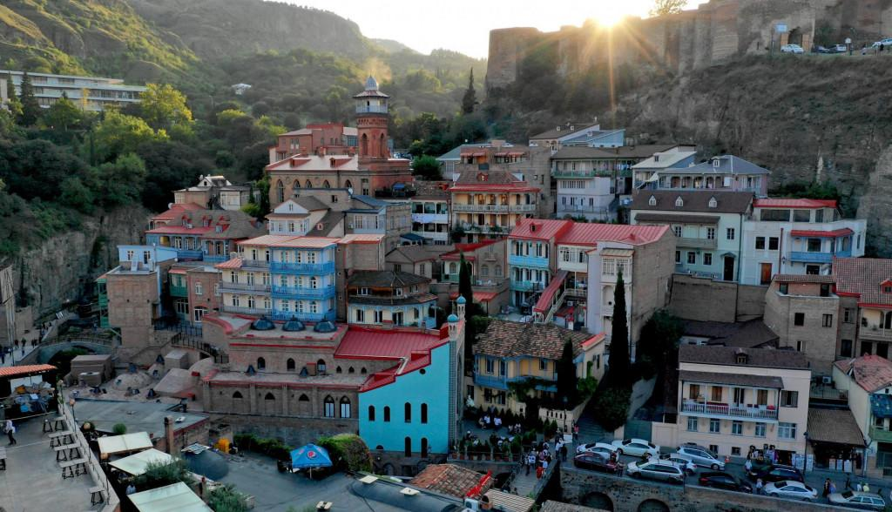
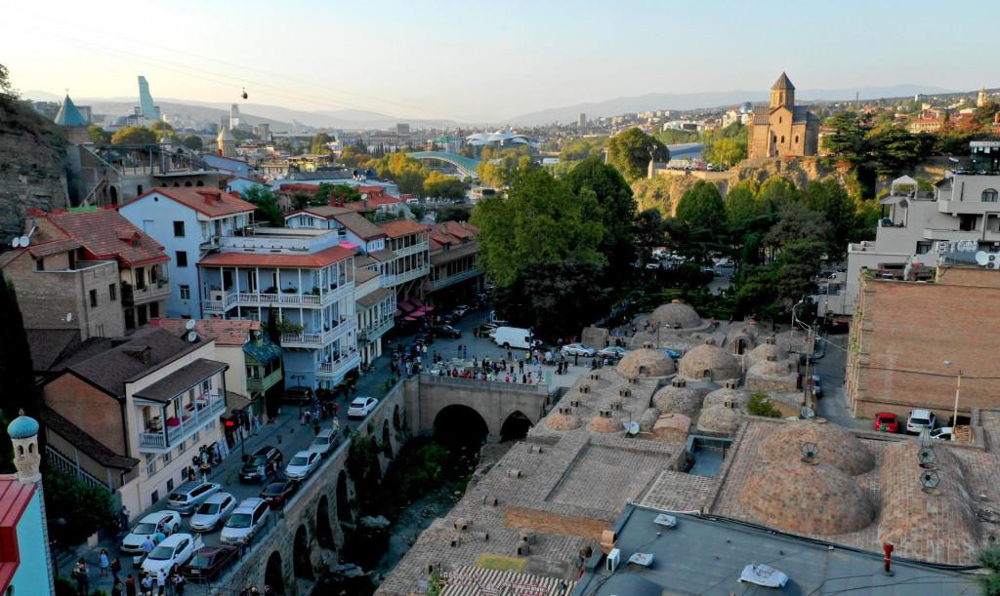

TOP 5 ტურისტული ადგილი თბილისში
წმინდა სამების საკათედრო ტაძარი
მეტეხის ღვთისმშობლის ეკლესია
ნარიყალას ციხესიმაგრე
ძველი თბილისი
მეიდანი
წმინდა სამების საკათედრო ტაძარი

მეტეხის ღვთისმშობლის ეკლესია

ნარიყალას ციხესიმაგრე
ძველი თბილისი

მეიდანი

სანახაობა
ტრანსპორტი (ავტობუსი)
წმინდა სამების საკათედრო ტაძარი
307
მეტეხის ღვთისმშობლის ეკლესია
202,206
ნარიყალას ციხესიმაგრე
308,310
ძველი თბილისი
505
მეიდანი
410